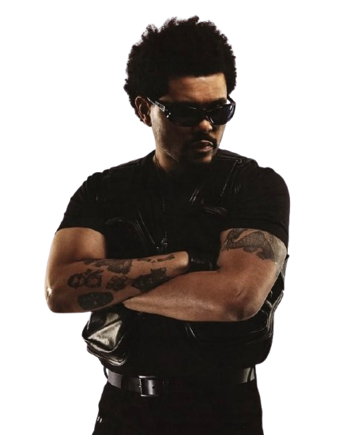

2020 · PRIMER ÁLBUM
Ver la teoría 01 →
After Hours
El sufrimiento, la culpa, la autodestrucción y la oscuridad se interpretan como indicios de un posible descenso al infierno.
¿Cómo construyen los fans el significado de la trilogía de The Weeknd? A través de letras, imágenes, videoclips y debates digitales, los seguidores conectan signos y elaboran teorías para interpretar una historia que no todos entienden de la misma manera.

After Hours · Dawn FM · Hurry Up TomorrowLa trilogía funciona como punto de partida para estudiar cómo se produce el significado y cómo las comunidades digitales participan en esa construcción.
The Weeknd desarrolló una trilogía formada por After Hours (2020), Dawn FM (2022) y Hurry Up Tomorrow (2025). Sus letras, personajes, videoclips, portadas y atmósferas sonoras ofrecen elementos que los seguidores relacionan para proponer una continuidad narrativa.
En comunidades digitales como Reddit, los fans publican hipótesis, comparan portadas, recuperan fragmentos de canciones y discuten qué lugar ocupa cada álbum dentro de la historia. Una de las interpretaciones más difundidas relaciona los discos con el recorrido de La divina comedia de Dante: infierno, purgatorio y paraíso. Otras lecturas se concentran en las posturas del artista en las portadas o cuestionan que el último álbum represente una salvación definitiva.
El interés lingüístico no consiste en decidir cuál teoría es la verdadera, sino en observar cómo se construyen, justifican y discuten los significados. Los usuarios seleccionan determinados indicios, los conectan con sus conocimientos previos y presentan una interpretación para que otros la acepten, discutan o modifiquen.
Las publicaciones analizadas constituyen discursos de fans: no deben confundirse con declaraciones oficiales del artista. Las hipótesis son valiosas para estudiar la producción de sentido, aunque no demuestran por sí solas cuál fue la intención original de The Weeknd.
Seleccioná cada álbum para ir directamente a la teoría que lo toma como parte central de su interpretación.
El sufrimiento, la culpa, la autodestrucción y la oscuridad se interpretan como indicios de un posible descenso al infierno.
La radio, el tránsito y la revisión de la propia vida permiten proponer una lectura vinculada con el limbo o el purgatorio.
La transformación, la identidad y la posibilidad de escapar de una etapa anterior abren el debate sobre el cierre de la trilogía.
Cada publicación selecciona distintos signos y propone relaciones entre ellos. Las teorías son interpretaciones de los fans, no confirmaciones automáticas de la intención del artista.
La primera teoría relaciona los tres álbumes con las etapas de La divina comedia, obra de Dante Alighieri que presenta un recorrido por el Infierno, el Purgatorio y el Paraíso. Desde esta perspectiva, los discos pueden interpretarse como momentos sucesivos de un viaje interior: caída, transición y posible transformación.
En esta lectura, After Hours ocupa el lugar del infierno. Los fans pueden relacionar su atmósfera oscura, las imágenes de sufrimiento y la representación de conductas autodestructivas con una situación de encierro emocional. El infierno no tiene que entenderse literalmente: funciona como una imagen cultural que permite expresar culpa, dolor o pérdida de control.
Dawn FM se interpreta como un estado intermedio, similar al purgatorio o al limbo. La idea de una estación de radio que acompaña al oyente durante una transición permite pensar el álbum como un espacio de espera, revisión y cambio. El personaje no estaría todavía en una resolución definitiva, sino atravesando un proceso.
Finalmente, Hurry Up Tomorrow puede ser leído como una posibilidad de transformación o salida. Sin embargo, esta interpretación no obliga a entender el final como una salvación completa: el título, las letras y las imágenes también pueden sugerir ansiedad, incertidumbre o la dificultad de abandonar una identidad anterior.
La clave de esta teoría es que los signos se leen en conjunto. Un color oscuro, por ejemplo, no significa automáticamente “infierno”. Adquiere ese valor dentro de una red de relaciones que incluye otros elementos del álbum y el conocimiento cultural del fan sobre Dante.
Teoría de fans que propone leer la trilogía mediante la estructura de La divina comedia: Infierno, Purgatorio y Paraíso.
Esta formulación resume la hipótesis que se analiza; no debe tomarse como una declaración oficial de The Weeknd.
Abrir la publicación en Reddit ↗Desde Ferdinand de Saussure, un signo lingüístico se comprende mediante la relación entre significante y significado. Aplicado por analogía al análisis de imágenes, una portada presenta una forma perceptible —colores, rostro, postura, composición— a la que el espectador atribuye un concepto. La asociación entre un disco y el “infierno” no está contenida naturalmente en una imagen: surge de convenciones culturales y de las relaciones que el intérprete establece con otros signos.
Demuestra cómo un fan organiza elementos dispersos en una explicación coherente. No demuestra, por sí sola, que el artista haya diseñado oficialmente los tres álbumes como una adaptación exacta de Dante.
Una segunda teoría se concentra en un detalle visual concreto: la posición de la cabeza y la dirección de la mirada de The Weeknd en las portadas de los tres álbumes. En lugar de tomar como principal evidencia las letras o la atmósfera musical, el usuario compara las imágenes y las interpreta como una secuencia.
Según la publicación, en la portada de After Hours el artista mira hacia abajo. El fan relaciona esa dirección con el descenso al infierno y con los motivos de sangre y rojo que aparecen en la estética de esa etapa. En Dawn FM, la mirada se dirige hacia el frente; esta posición se asocia con un estado intermedio, en sintonía con la idea de limbo o purgatorio. En Hurry Up Tomorrow, la mirada hacia arriba se interpreta como una orientación hacia el cielo o hacia una posible salvación.
La teoría también toma en cuenta la vestimenta y la apariencia del personaje. El fan interpreta esos elementos como indicios de una lucha por alcanzar una transformación. Así, la lectura no depende exclusivamente de la mirada, sino de cómo se combina con otros detalles visuales y con la hipótesis previa sobre Dante.
“In the After Hours cover, Abel is looking downwards”
El autor de la publicación propone que la dirección de la mirada es un indicio visual que puede conectarse con el descenso al infierno. La publicación extiende la comparación a las portadas de los otros dos álbumes.
Leer la teoría de las portadas en Reddit ↗La dirección de una mirada es un elemento visual, no una palabra. Sin embargo, puede funcionar como signo en una interpretación cultural. El fan observa la postura del personaje, la compara entre las tres imágenes y le asigna valores como descenso, tránsito y elevación. Esa relación es una construcción interpretativa: mirar hacia abajo no significa “infierno” en todos los contextos posibles.
Saussure sostiene que el valor de un signo depende de sus relaciones y diferencias dentro de un sistema. Esta idea ayuda a explicar por qué la teoría compara las portadas en lugar de analizarlas por separado. La mirada hacia abajo adquiere una función narrativa en contraste con la mirada frontal y la mirada hacia arriba. El sentido propuesto nace de la serie completa y de las diferencias entre sus partes.
La función poética pone el foco en la forma en que se organiza el mensaje y en cómo esa forma produce sentido. En esta teoría, la composición visual, la repetición de un rostro y la variación de la mirada se convierten en elementos significativos. La comparación entre portadas es semejante a observar un patrón: el fan presta atención a la disposición de los elementos y a sus diferencias.
La teoría es una lectura posible, pero la postura de la cabeza también puede deberse a decisiones fotográficas, estéticas o promocionales. Para demostrar una intención autoral específica harían falta otras evidencias, como declaraciones del artista o de su equipo creativo. La publicación permite analizar cómo un fan construye sentido, aunque no confirma que su hipótesis sea la única correcta.
La tercera teoría plantea un problema diferente: en vez de aceptar sin discusión que los tres discos forman un recorrido lineal desde el infierno hasta el paraíso, pregunta cómo se relaciona Hurry Up Tomorrow con los dos álbumes anteriores. El foco pasa de interpretar un símbolo específico a discutir la estructura global de la trilogía.
Una posibilidad es considerar que el tercer álbum continúa principalmente elementos de After Hours, en lugar de funcionar como una continuación directa de Dawn FM. Desde esta lectura, el vínculo entre las obras no tiene por qué formar una secuencia ordenada y perfectamente cerrada. Pueden existir repeticiones, regresos, contradicciones y conexiones temáticas que hagan que el relato se parezca más a un ciclo que a una línea recta.
Esta interpretación obliga a revisar la primera teoría. Si se parte de que cada disco representa necesariamente una etapa de Dante, el tercer álbum debería ocupar el lugar del paraíso. Pero si sus temas, imágenes o referencias parecen recuperar conflictos anteriores, el fan puede preguntarse si realmente hay una resolución, si el personaje vuelve a un estado previo o si las etapas se superponen.
Por eso, el desacuerdo entre fans no consiste únicamente en elegir un significado para una imagen. También puede tratarse de decidir qué elementos son relevantes, qué conexiones son más sólidas y qué estructura general permite explicar mejor los tres álbumes. Los participantes pueden compartir las mismas portadas y canciones, pero organizar sus evidencias de forma distinta.
Debate sobre cómo Hurry Up Tomorrow se relaciona con After Hours y Dawn FM, y sobre si el último disco continúa directamente la narrativa del segundo.
La publicación se toma como punto de partida para estudiar una pregunta interpretativa: ¿la trilogía debe leerse como una progresión lineal o admite conexiones menos directas? La descripción resume el problema y no pretende ser una cita textual del usuario.
Consultar el debate sobre la trilogía en Reddit ↗Esta teoría permite observar que ningún álbum tiene que interpretarse de forma aislada. El valor que un fan atribuye a Hurry Up Tomorrow depende, en parte, de las relaciones que establece con los otros dos discos. Si cambia la relación propuesta entre las obras, también puede cambiar el sentido atribuido al álbum final.
La función referencial aparece cuando el usuario menciona canciones, portadas o acontecimientos concretos para sostener su hipótesis. La función emotiva se observa cuando expresa sorpresa, duda, entusiasmo o desacuerdo. Ambas pueden aparecer en un mismo comentario: el fan puede aportar un dato sobre un álbum y, a la vez, manifestar que esa conexión le resulta convincente o problemática.
Desde la pragmática, la interpretación no depende únicamente del contenido literal de un mensaje. Los participantes consideran el contexto, sus conocimientos previos y la intención que atribuyen a quien escribe. Una pregunta como “¿cómo encaja el último disco?” invita a los demás a aportar razones, recuperar información compartida y proponer inferencias. La comunidad no recibe pasivamente una historia: participa en su reconstrucción.
Muestra que una comunidad puede debatir no solo qué significa un signo, sino también qué relación existe entre las partes de una obra. La trilogía se convierte en un objeto de interpretación colectiva y revisable. La lectura final depende de qué indicios selecciona cada participante y de cómo los organiza para sostener su explicación.
Saussure permite pensar el signo y sus relaciones; Jakobson ayuda a reconocer qué funciones cumple el lenguaje; Escandell Vidal explica por qué el contexto y las inferencias son indispensables para interpretar los mensajes.
Para Saussure, el signo lingüístico une un significante —la imagen acústica o forma perceptible— y un significado —el concepto asociado—. La relación entre ambos no es natural, sino convencional dentro de una comunidad lingüística.
Además, el valor de un signo depende de sus diferencias y relaciones con otros signos del sistema. Por eso, una palabra no tiene valor únicamente por sí misma: también importa cómo se distingue de otras.
En el corpus, esta idea ayuda a explicar por qué los fans relacionan imágenes, colores, miradas y títulos. El significado de una portada cambia según las relaciones que el intérprete establece con las demás portadas y con su conocimiento cultural.
Jakobson distingue seis funciones, según el componente de la comunicación que predomina: referencial, emotiva, conativa, fática, metalingüística y poética. En un mismo mensaje pueden coexistir varias; se habla de predominio, no de exclusividad.
En las teorías de Reddit, la función referencial aparece cuando se describen álbumes o portadas; la emotiva, cuando el usuario expresa una opinión o duda; y la conativa, cuando busca una respuesta, invita a debatir o intenta convencer a otros.
También puede aparecer la función poética cuando la atención se dirige a la forma del mensaje o a patrones visuales, como la comparación de la mirada en las tres portadas.
La pragmática estudia cómo se interpretan los enunciados en situaciones concretas. Para comprender un mensaje no alcanza con conocer el código: también importan quién habla, a quién se dirige, qué conocimientos comparte y qué intención se le atribuye.
El destinatario realiza inferencias para recuperar sentidos que no siempre están expresados de manera literal. La interpretación surge de combinar lo dicho con información contextual y conocimientos previos.
En Reddit, un fan puede entender una referencia porque conoce videoclips, entrevistas o teorías anteriores. Otro lector puede no reconocerla y llegar a una conclusión diferente. El contexto digital también permite responder, corregir, discutir y reformular hipótesis.
Los tres enfoques se complementan. Saussure ayuda a estudiar cómo los signos adquieren valor por sus relaciones; Jakobson permite analizar qué hacen los usuarios mediante sus mensajes; y Escandell Vidal explica cómo los participantes interpretan esos mensajes a partir del contexto y de las inferencias.
Por ejemplo, un usuario puede observar que The Weeknd mira hacia abajo en una portada y hacia arriba en otra. Desde una perspectiva cercana a Saussure, compara las diferencias entre las imágenes y las integra en un sistema de relaciones. Desde Jakobson, puede describirse cómo presenta información sobre las portadas, expresa su opinión e intenta convencer a otros participantes. Desde la pragmática, se considera que el lector interpreta esa propuesta según su conocimiento de los álbumes, de la obra de Dante y de las conversaciones previas.
Así, el sentido no se presenta como una propiedad evidente que todos descubren de manera idéntica. Se construye mediante relaciones entre signos, decisiones discursivas, conocimientos compartidos y situaciones comunicativas. Esto no significa que cualquier interpretación sea igualmente sólida: una teoría puede evaluarse según la evidencia que presenta, la coherencia de sus conexiones y su capacidad para explicar los elementos que selecciona.
Elegí la forma de análisis que te resulte más convincente. Al seleccionar una opción, vas a ver cómo se relaciona con los conceptos lingüísticos trabajados en esta página.
Los videoclips amplían el universo visual que los fans recuperan para construir interpretaciones.
Si el reproductor no está disponible, podés buscar material audiovisual en el canal oficial de The Weeknd en YouTube ↗.
Una canción no comunica solamente a través de sus palabras. La melodía, la voz, el ritmo, la iluminación, los colores, los gestos y la composición de una escena también participan en la producción de sentido.
Cuando los fans analizan un videoclip, seleccionan algunos de esos elementos y los relacionan con otros materiales. Una escena puede funcionar como evidencia para una teoría, pero su interpretación depende de las conexiones que el espectador construye.
Esto permite vincular el análisis lingüístico con una cultura digital en la que los significados circulan entre canciones, imágenes, comentarios, videos y debates colectivos.
Las teorías sobre la trilogía de The Weeknd muestran que los fans no se limitan a recibir una obra: seleccionan indicios, los comparan y construyen explicaciones para compartirlas con otras personas. La lectura que relaciona los discos con Dante, la comparación de las miradas en las portadas y el debate sobre la continuidad narrativa parten de preguntas diferentes y organizan las evidencias de distintas maneras.
Saussure permite comprender la importancia de las relaciones entre signos; Jakobson ayuda a reconocer las funciones que cumplen los mensajes dentro de la discusión; y Escandell Vidal permite explicar por qué la interpretación depende del contexto, de los conocimientos previos y de las inferencias de los participantes.
En definitiva, que existan varias interpretaciones no implica que todas estén igualmente justificadas. Las teorías pueden compararse según los signos que consideran, la coherencia de sus argumentos y la evidencia que aportan. La comunidad digital se convierte así en un espacio donde el significado se propone, se discute y se revisa.
Las fuentes se dividen entre publicaciones de fans —que constituyen el corpus de análisis— y materiales teóricos para estudiar los conceptos lingüísticos. Los enlaces externos se abren en una nueva pestaña.
Publicación de Reddit utilizada como punto de partida para analizar la lectura espiritual de los tres álbumes.
Consultar publicación ↗Publicación que compara las portadas y propone interpretar la dirección de la mirada en relación con Infierno, Purgatorio y Paraíso.
Consultar publicación ↗Publicación para examinar las distintas formas en que los fans conectan el último álbum con los anteriores.
Consultar publicación ↗Referencia clásica para los conceptos de signo lingüístico, significante, significado, sistema y valor diferencial.
Buscar ediciones disponibles ↗Texto de referencia para las funciones del lenguaje y la relación entre los componentes de la comunicación.
Buscar el texto académico ↗Obra de referencia para el estudio de la interpretación, el contexto, los participantes y las inferencias en la comunicación.
Consultar registros bibliográficos ↗Fuente audiovisual complementaria para consultar videoclips y material publicado por el artista.
Abrir canal oficial ↗